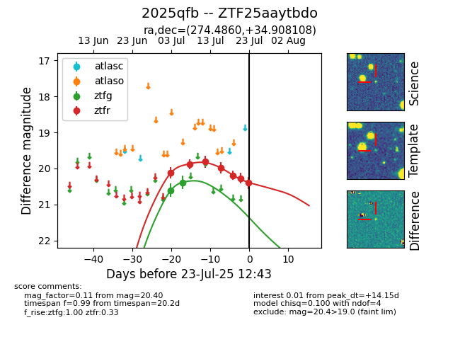

Target ZTF25aaytbdo at 2025-07-23 12:43, see:
FINK: fink-portal.org/ZTF25aaytbdo
Lasair: lasair-ztf.lsst.ac.uk/objects/ZTF25aaytbdo
ALeRCE: alerce.online/object/ZTF25aaytbdo
TNS: wis-tns.org/object/2025qfb
YSE: ziggy.ucolick.org/yse/transient_detail/2025qfb
alt names
ZTF25aaytbdo (ztf,fink)
2025qfb (tns,yse)
coordinates:
equatorial (ra, dec) = (274.4860,+34.90811)
galactic (l, b) = (62.2080,+21.54473)
photometry
last ztfg=20.39, ztfr=20.40
2 ztfg, 7 ztfr detections
